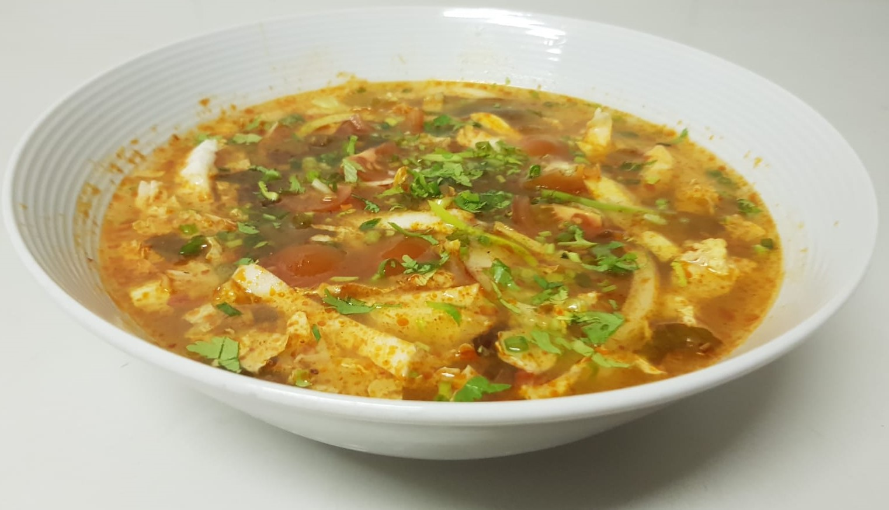

RESTAURANT CHEZ THOA
Les goûts du Vietnam

Phở bò.........................................23.-
aux nouilles traditionelles au boeuf avec pousses de soja et herbes asiatiques - tranches de boeuf cru (A.bò tái)
Bún Bò Huế.....................................23.- aux nouilles de riz au boeuf et porc à la citronnelle, saté maison, salades et herbes asiatiques, tranches de boeuf cru(A.bò tái)
Soupe chua cay / Soupe aigre-piquante...................23.-
À choix : poulet, bœuf, crevettes ou tofu.
Vermicelles de riz, herbes asiatiques, légumes de saisons.
Phở Chay / Soupe Phở végétarienne.............................23.-
aux nouilles traditionnelles avec
boulettes végétariennes, pousses de soja et herbe asiatique.
Bún Bò Huế Chay/"Bun bo Hue" végétarienne....................23.-
aux nouilles de riz avec du tofu, satay maison,
salade et herbes asiatiques.